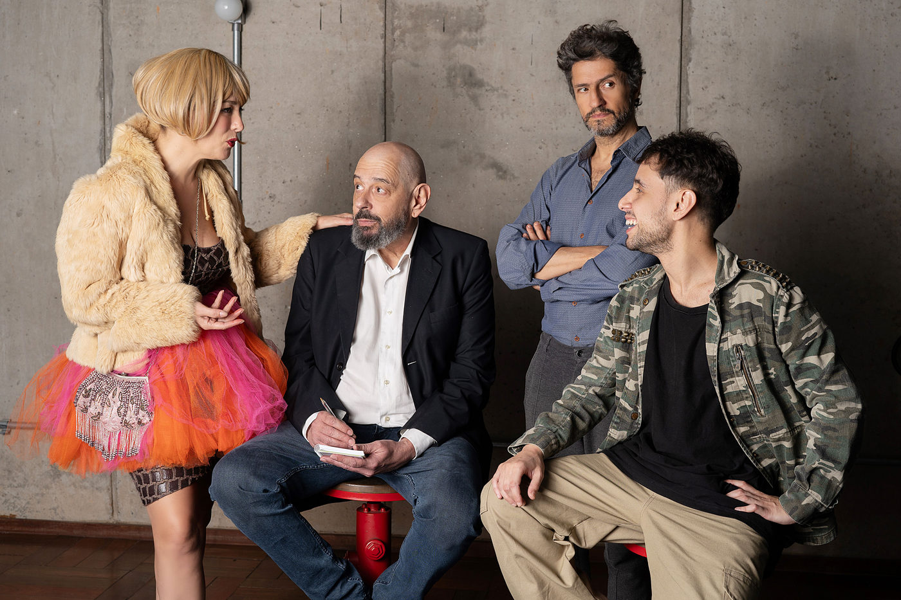

"Cães de Rua" estreia em São Paulo expondo a fragilidade humana

Estreia da peça "Cães de Rua", escrita e dirigida por Patrícia Vilela, aborda de forma visceral os efeitos da manipulação política e social.
Com uma temática atual e densa, a peça "Cães de Rua", dirigida por Patrícia Vilela, estreou em 2 de outubro no MI Teatro, em São Paulo, trazendo à tona reflexões sobre golpes, fake news e a fragilidade social. A montagem, produzida pela companhia de teatro COLAATORES, permanece em cartaz até 19 de dezembro e conta com a participação especial do ator Fernando Alves Pinto e a voz em off de Marcelo Tas.
Escrita durante a pandemia, antes da invasão do Capitólio nos EUA, "Cães de Rua" aborda com profundidade as vulnerabilidades humanas diante de golpes emocionais, financeiros e políticos. A peça apresenta um grupo de apoio de 13 pessoas que compartilham suas experiências traumáticas enquanto são acompanhadas pelo enigmático psicanalista Dr. Felipe Basili, interpretado por Vitor Capoal. O personagem carrega uma conexão com Diógenes, filósofo cínico da Antiguidade, que procurava honestidade na sociedade.
O texto de Patrícia Vilela, além de se debruçar sobre as dores e enganos das vítimas, também explora o universo das fake news, dos políticos corruptos e dos golpistas que se aproveitam da vulnerabilidade social. Com um clima de suspense e uma narrativa provocadora, o público é convidado a testemunhar o embate entre os personagens e as consequências emocionais desses golpes.
O elenco traz uma energia potente para os palcos, com destaque para Fernando Alves Pinto, convidado especial que interpreta Ricardo, uma das figuras centrais do drama. Ao lado dele, estão Vitor Capoal, Jeyne Stakflett, Luna Martinelli, Maíra Chasseraux e outros talentosos atores que, sob a direção de Vilela, entregam performances intensas e emocionantes.
Marcelo Tas, conhecido por seu papel em "CQC" e sua atuação crítica na mídia, faz uma participação especial com sua voz em off, o que contribui para a atmosfera sombria e reflexiva da peça.
A narrativa de "Cães de Rua" não apenas reflete o cenário político atual, marcado pela disseminação de fake news e pelo uso manipulador das redes sociais, mas também expõe as fissuras de uma sociedade em crise. Golpes financeiros, negacionismo e as teorias conspiratórias de movimentos como QAnon são temas centrais que permeiam o texto.
A peça também se conecta com o momento social brasileiro, onde a educação deficiente e a desinformação se tornam campos férteis para a proliferação de golpes e discursos extremistas. Em uma sociedade psicologicamente fragilizada, "Cães de Rua" explora as consequências de uma sociedade que se perde, como cães vagando sem rumo.
Além de assinar o texto e a direção, Patrícia Vilela também integra o elenco, mostrando seu envolvimento completo com a produção. A trilha sonora original é de Rod Junelini, a iluminação fica a cargo de Rodrigo Cordeiro, e os figurinos são assinados por Maitê Chasseraux, tudo contribuindo para a criação de uma atmosfera tensa e envolvente.
"Cães de Rua" estará em cartaz até 19 de dezembro de 2024, com sessões às quartas e quintas-feiras, às 20h, no MI Teatro. A capacidade do teatro é limitada a 58 lugares, e os ingressos podem ser adquiridos pelo Sympla.
Essa nova montagem da COLAATORES promete provocar e emocionar, trazendo uma reflexão necessária sobre a manipulação, a crise de confiança e as consequências emocionais da era das fake news.